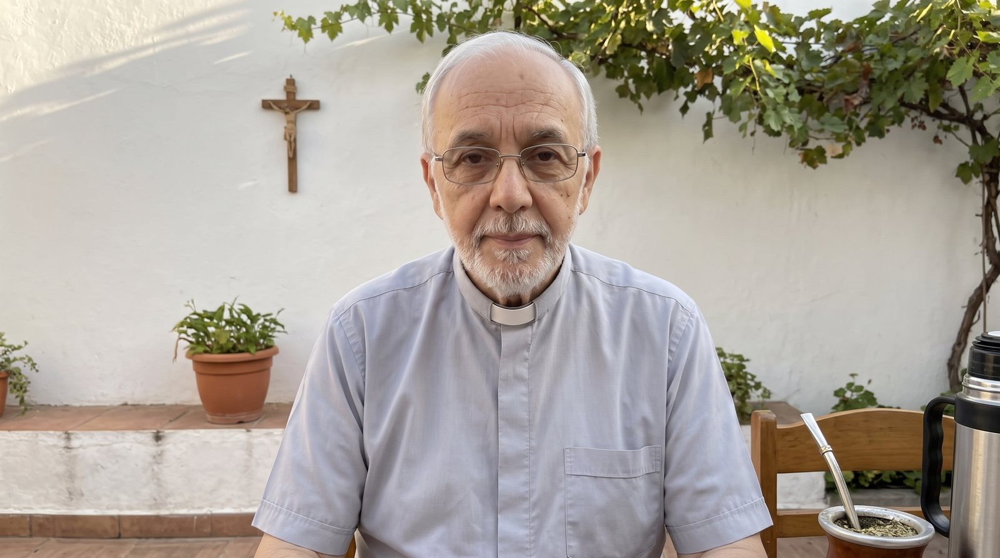
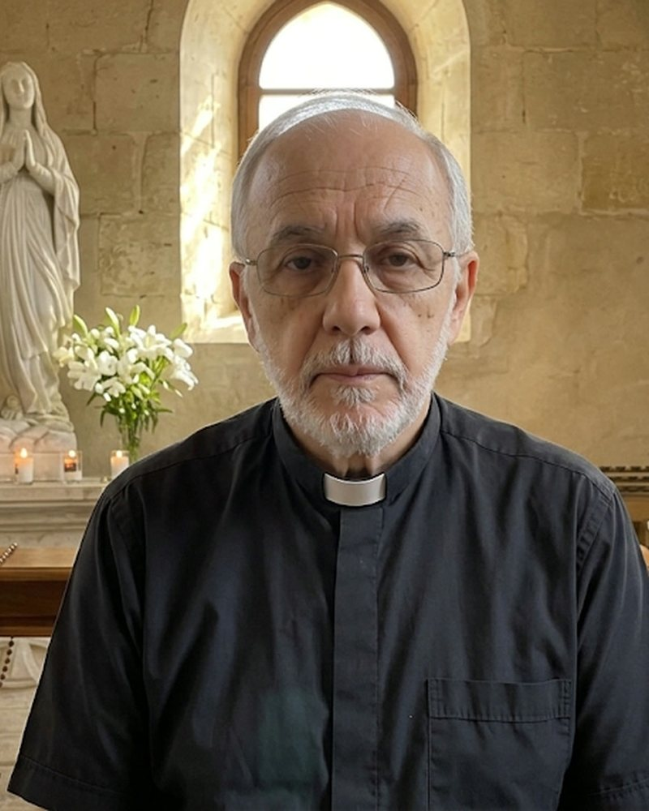
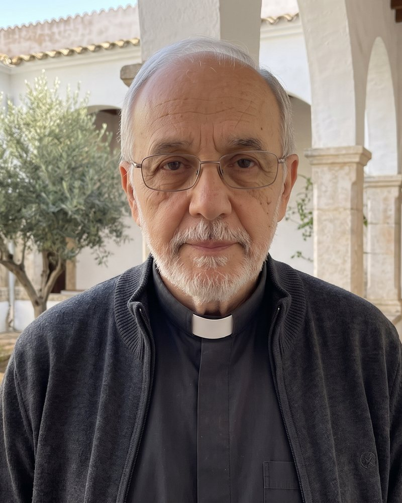

Oraciones del Padre Samuel
La oración de hoy, el Evangelio en una frase y oraciones para cada momento de la vida. Y un regalo para tu casa. Todo gratis, para siempre.

El Evangelio de hoy ·
Rezar con esta palabra →Oraciones
La casa bendecida
Elige al santo que cuida de tu familia, escribe tu apellido y descarga gratis el escudo para enmarcar, con la bendición de la casa y los nombres de los tuyos.
Crear el escudo de mi familiaDel 29 de noviembre al 24 de diciembre
Cada mañana de Adviento, una oración breve para preparar la Navidad en casa. Gratis.
Dónde encontrarnos


Quiénes somos
Oraciones del Padre Samuel nació en YouTube para acompañar a las familias católicas: las noticias del Papa y de la Iglesia contadas con calma, y siempre una oración al final.
Esta web es la casa de todos esos canales. Aquí no hay anuncios ni nada que pagar: solo oraciones para rezar, guardar y compartir con los tuyos.
El Padre Samuel es un personaje presentado con inteligencia artificial. Las noticias, citas y documentos de los que hablamos son reales y siempre citamos las fuentes; las oraciones siguen la fe de la Iglesia.